CopperScreen
Screenshot gallery
Captured from the emulator. Select an image to see the full-size view.
{kind=link}
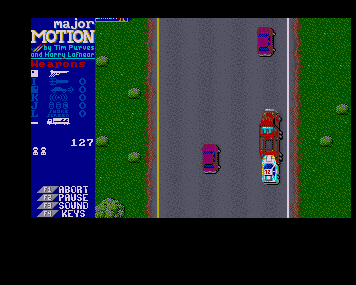
Major Motion
Highway action among cars and trucks.
{kind=link}
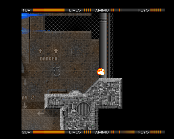
Alien Breed
Exploring the corridors of level one.
{kind=link}
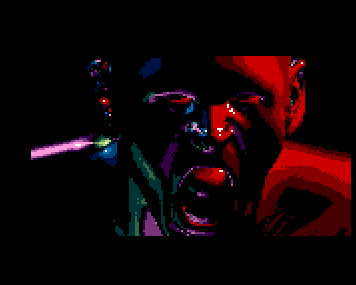
Inside the Machine
The face-light scene from DESiRE's demo.
{kind=link}
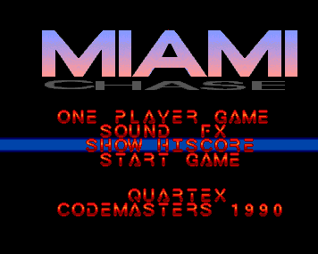
Miami Chase
Main menu beneath the Miami Chase logo.
{kind=link}
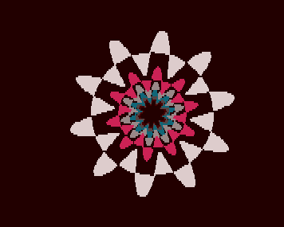
Arte
A geometric flower from Sanity's demo.
{kind=link}
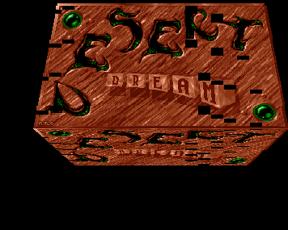
Desert Dream
The sculpted title from Kefrens' demo.
{kind=link}
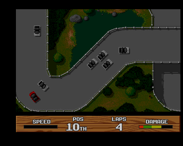
Super Cars II
Racing around Bagley Marsh, with four laps remaining.
{kind=link}
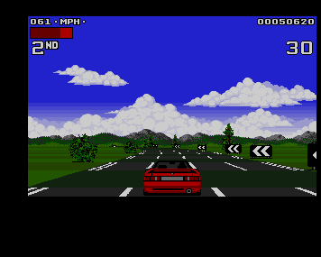
Lotus Turbo Challenge 2
A country-road race at 61 MPH.
{kind=link}
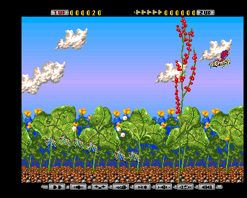
Apidya
Flying through the opening garden stage.
{kind=link}
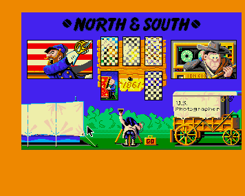
North & South
Main menu with scenario and year selection.

Lemmings
In-game view with the skill selection panel.

Hired Guns
Training area with four character views.
{kind=link}
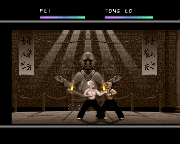
Full Contact
A fight against Tong Lo in the temple arena.
{kind=link}
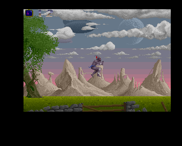
Shadow of the Beast
A jump across the outdoor landscape.
{kind=link}
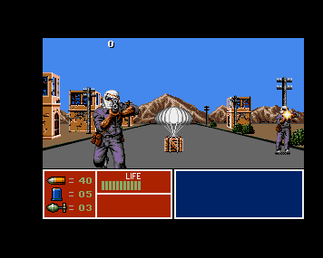
Operation Thunderbolt
Roadside action with enemies and a supply drop.
These captures show individual scenes, not a guarantee of complete game compatibility. Images use the application's full PAL display viewport, including overscan, without added scanlines or visual effects.